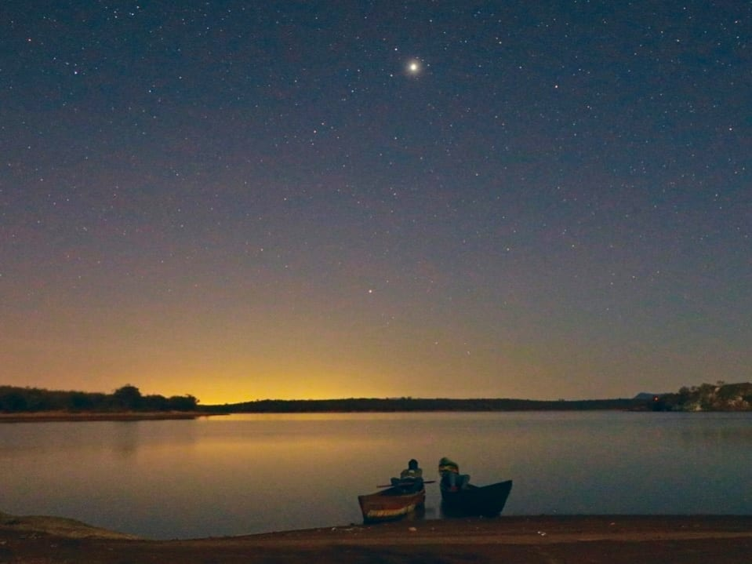

Sound → Film
Binti

A visually striking meditation on motherhood as a young woman goes to extraordinary lengths to help her pregnant mother. Shrouded in an evocative darkness, this stunningly shot short from Victorian College of the Arts graduate Sophie-Anne Njeri Ndagu – whose title translates to ‘daughter’ – centres on a young woman’s attempt to take her pregnant mother to a hospital on the mainland by boat. Steeped in captivating tension and peril, it’s a compelling exploration of women’s experience that foregrounds the female perspective on motherhood, femininity and the family dynamic.
- RoleLocation Recordist
- DirectorSophie-Anne Ndagu
- Year2022
- SelectedMelbourne International Film Festival